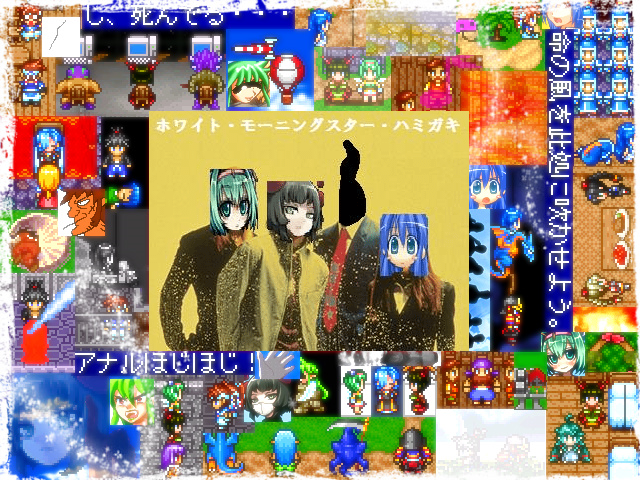

| №034 ホワイト・モーニングスター・ハミガキ | |
|
 | |
| 作者：池田さん | |
| 作成ツクール：2000 | |
|
作者コメント あの感動をもう一度。 子供が大人に成るという事、大人が子供に帰るという事を、「小さな笑い」「細やかな懐古」「温かい感動」を交えて描き出す優しいドラマ作品が此処に結実。 貴方も“あの頃”に少しだけ帰ってみませんか？ | |
|
管理人コメント すごーくまじめなコメントとSSの顔倉のギャップがｗｗｗｗ 一体どんな手法でこれらを融合させてくるのか楽しみ！ SS更新ですごく賑やかな感じに！ | |
| ダウンロード(13.9mb) / 感想掲示板 | |
| 前の作品 / 次の作品 / TOPへ戻る | |